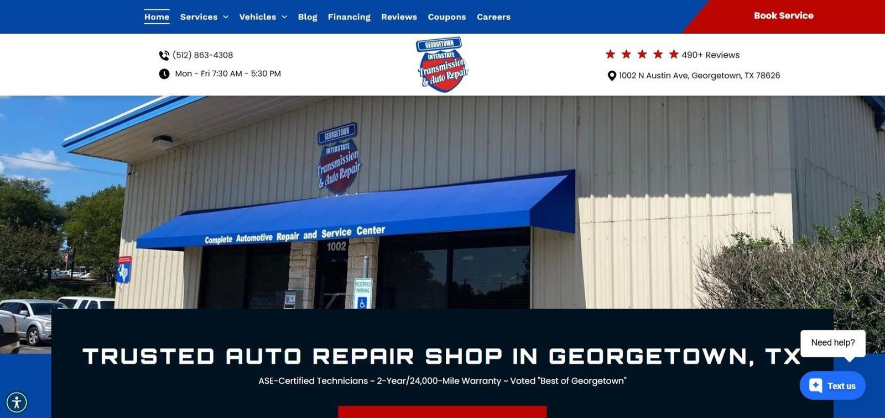

Skip to content

Home
Services
Our work
Reviews
About
(512) 863-4308
Get a quote
Menu
Home
Services
Our work
Reviews
About
Get a quote
Call (512) 863-4308
Georgetown Interstate · Georgetown
Our work
Real work, straight from Georgetown Interstate.
All
The shop
Waiting room
Customer cars
Community
Every bay, wide open
The kids' playroom, road rug and all
The shop truck in its red, white and blue
A blue Challenger in the lot
The roadside sign, congratulating Ashley and Landon on a baby boy
Call (512) 863-4308